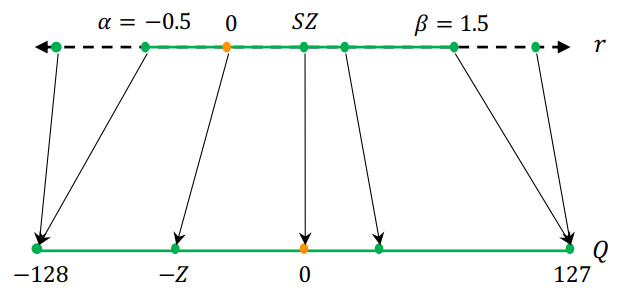

Lab 1 - AI Model Design and Quantization
Lab 1.1 - AI Model Design
1. Targeting Task and Dataset
In the labs of this course, we will perform an image classification task on the CIFAR-10 dataset. CIFAR-10 consists of 60,000 colored images (32×32 pixels, RGB channels) across 10 classes: airplane, automobile, bird, cat, deer, dog, frog, horse, ship, and truck. It is split into 50,000 training and 10,000 test images.
Many convolutional neural networks (CNNs) have been evaluated on CIFAR-10, making it a valuable dataset for learning image classification techniques.
2. Model Architecture Design
Below, we introduce several commonly used operators in convolutional neural networks (CNNs). In the assignment of this lab, you will be asked to design your own model architecture using these operators and apply it to the CIFAR-10 image classification task.
In the following formulas, we present:
Convolution
Convolutions are widely used for feature extraction in computer vision tasks. A convolution operator can defined by its size, stride, padding, dilation, etc.
Here is the mathematical representation:
In AlexNet, 11×11, 5×5, and 3×3 Conv2D layers are used. However, using multiple convolution kernel sizes in a model increases the complexity of hardware implementation. Therefore, in this lab, we will use only 3×3 Conv2D with a padding size of 1 and a stride of 1, following the approach in VGGNet. With these settings, the spatial dimensions of the output feature map will remain the same as those of the input feature map.
Linear
Fully-connected layers, also known as linear layers or dense layers, connect every input neuron to every output neuron and are commonly used as the classifier in a neural network.
Rectified Linear Unit (ReLU)
ReLU is an activation function, which sets all negative values to zero while keeping positive values unchanged. It introduces non-linearity to the model, helping neural networks learn complex patterns while mitigating the vanishing gradient problem compared to other activation functions like sigmoid, hyperbolic tangent, etc.
{width=75%}
Max Pooling
Max pooling is a downsampling operation commonly used in convolutional neural networks (CNNs) to reduce the spatial dimensions of feature maps while preserving important features. In the following formulas, we present the typical 2D max pooling operation.
{width=80%}
Batch Normalization
Batch Normalization (BN) is a technique used in deep learning to stabilize and accelerate training by normalizing the inputs of each layer. It reduces internal covariate shift, making optimization more efficient.
The learnable parameters \(\gamma\) and \(\beta\) are updated during training but remains fixed during inference.
- During forward propagation of training: the mean and variance are calculated from the current mini-batch.
- During backward propagation of training: \(\gamma\) and \(\beta\) are updated with the gradients \(\frac{\partial L}{\partial \gamma}\) and \(\frac{\partial L}{\partial \beta}\) respectively
- During inference: \(\gamma\) and \(\beta\) are fixed
As the following figure shows, the batch normalization are applied per channel. That is, the mean and variance are computed over all elements in the batch (\(N\)) and spatial dimension (\(H\) and \(W\)). Each channel has independent \(\gamma_c\) and \(\beta_c\) parameters.
3. Model Training and Hyperparameter Tuning
You can use these techniques to improve the accuracy and efficiency of model training. - Learning Rate Scheduling and Optimizer - Weight Initialization - Regularization (L1, L2) - Softmax and Cross Entropy Loss - They are commonly used in image classification tasks.
Lab 1.2 - AI Model Quantization
Why Quantization?
In the beginning, we need to discuss the different data types that can be used for computation and their associated hardware costs.
Number Representation
Integers
| Integer Format | Length (bit) | Value Range |
|---|---|---|
| INT32 | 32 | -2,147,483,648 ~ 2,147,483,647 |
| UINT32 | 32 | 0 ~ 4,294,967,295 |
| INT16 | 16 | -32768 ~ 32767 |
| UINT16 | 16 | 0 ~ 65535 |
| INT8 | 8 | -128 ~ 127 |
| UINT8 | 8 | 0 ~ 255 |
Floating Point Numbers
| Floating Point Format | Length (bits) | Exponent (E) | Mantissa (M) | Applications |
|---|---|---|---|---|
| FP64 | 64 | 11 | 52 | High precision computing, scientific simulations |
| FP32 | 32 | 8 | 23 | General computing, 3D rendering, machine learning |
| TF32 | 32 | 8 | 10 | NVIDIA proposed, AI training acceleration |
| FP16 | 16 | 5 | 10 | Low-power AI training and inference |
| BF16 | 16 | 8 | 7 | AI training, better compatibility with FP32 |
| FP8-E4M3 | 8 | 4 | 3 | Low-precision AI inference |
| FP8-E5M2 | 8 | 5 | 2 | Low-precision AI inference |
Hardware Energy/Area Cost on Different Numeric Operation
Floating-point arithmetic is more computationally expensive due to the overhead of mantissa alignment and mantissa multiplications
- When training a model in Python, we often use FP32 precision in default, as it provides a good performance and accuracy. However, we can observe that FP32 comes with a significant computational cost, making it less efficient in terms of hardware usage and power consumption.
- To reduce hardware costs (size of storage and computation), we can apply quantization, which converts high-precision numbers (e.g. FP32) into lower-precision formats (e.g. INT8).
Quantization Schemes
- In the previous discussion, we introduced various data type formats and observed that high-precision computations are computationally expensive. To reduce this cost, we can apply quantization, reducing hardware complexity and improving efficiency.
- In this section, we will guide you through different quantization schemes, and delve into the calibration implementation. By the end, you will have a clear understanding of how to effectively apply PTQ to optimize model performance while maintaining accuracy.
Uniform/Non-uniform
Uniform Quantization (Linear Quantization)
- Uniform quantization maps input values to equally spaced discrete levels.
The precise definition of the scaling factor \(s\) and zero point \(z\) varies with which quantization scheme is utilzed.
Non-Uniform Quantization (Logarithmic/power-of-2 Quantization)
- Non-uniform quantization maps input value to varying step sizes.
Symmetric/Asymmetric
Asymmetric/Affine Uniform Quantiztaion
-
Asymmetric quantization allows a nonzero zero point to better represent skewed data distributions at the cost of additional processing. 
-
asymmetric: \(\beta \ne -\alpha\)
Symmetric Uniform Quantiztaion
-
Symmetric quantization uses a zero-centered scale for positive and negative values
-
symmetric: \(\beta = -\alpha\)
Comparison
Compared to asymmetric quantization, symmetric quantization is more hardware-friendly, which eliminates the cross terms of quantized matrix multiplication
- Faster Matrix Multiplication With symmetric quantization, all data is scaled using the same factor, and the zero-point is set to 0. This allows direct execution of integer-only operations: $$ \begin{align} C_q &= A_q \times B_q \end{align} $$ In contrast, with asymmetric quantization, matrix multiplication becomes more complex because the zero-point must be accounted for: $$ \begin{align} C_q &= (A_q-Z_A) \times (B_q-Z_B) \end{align} $$ This introduces additional subtraction operations, increasing the computational cost.
Clipping Range
- clipping range \(= [\alpha, \beta]\)
- dynamic range \(= [r_\min, r_\max]\)
Min-Max Clipping
For min-max clipping, clipping range = dynamic range
Moving Average Clipping
Percentile Clipping
Reduced Range/Full Range
For \(b\)-bit signed integer quantization
| \(q_\min\) | \(q_\max\) | |
|---|---|---|
| Full range | \(-2^{b-1}\) | \(2^{b-1}-1\) |
| Reduce range | \(-2^{b-1}+1\) | \(2^{b-1}-1\) |
For \(b\)-bit unsigned integer quantization
| \(q_\min\) | \(q_\max\) | |
|---|---|---|
| Full range | \(0\) | \(2^b-1\) |
| Reduce range | \(0\) | \(2^b-2\) |
For example, the integer representation of an 8-bit signed integer quantized number with reduce range is in the interval \([-127, 127]\).
Calibration Algorithms
The process of choosing the input clipping range is known as calibration. The simplest technique (also the default in PyTorch) is to record the running minimum and maximum values and assign them to \(\alpha\) and \(\beta\). In PyTorch, Observer modules (code) collect statistics on the input values and calculate the qparams
scaleandzero_point. Different calibration schemes result in different quantized outputs, and it’s best to empirically verify which scheme works best for your application and architecture. -- PyTorch
Weight-only Quantization
In weight-only quantization, only weights are and quantized, while activations remain in full-precision (FP32).
Static Quantization
In static quantization approach, both weight's and activation's clipping range are pre-calculated and the resulting quantization parameters remain fixed during inference. This approach does not add any computational overhead during runtime.
Dynamic Quantization
In dynamic quantization, activation's clipping range as well as the quantization parameters are dynamically calculated for each activation map during runtime. This approach requires run-time computation of the signal statistics (min, max, percentile, etc.) which can have a very high overhead.
| Weight-only quantization | Static quantization | Dynamic quantization | |
|---|---|---|---|
| calibrate on weights | before inference | before inference | before inference |
| quantize on weights | before inference | before inference | before inference |
| calibrate on activations | no | before inference | during inference |
| quantize on activations | no | during inference | during inference |
| runtime overhead of quantization | no | low | high |
PTQ/QAT
PTQ (Post-Training Quantization)
All the weights and activations quantization parameters are determined without any re-training of the NN model. In this assignment, we will use this method to perform quantization on our model.
QAT (Quantization-Aware Training)
Quantization can slightly alter trained model parameters, shifting them from their original state. To mitigate this, the model can be re-trained with quantized parameters to achieve better convergence and lower loss.
Straight-Through Estimator (STE)
In QAT, since quantization is non-differentiable, standard backpropagation cannot compute gradients. The STE in Quantization-Aware Training (QAT) allows gradients to bypass this step, enabling the model to be trained as if it were using continuous values while still applying quantization constraints.
Quantization Errors
A metric to evaluate the numerical error introduced by quantization.
where \(r\) is the original tensor, \(\hat r = \mathbf{D}(\mathbf{Q}(r))\) is the tensor after quantization and dequantization.
Mean-Square Error (MSE)
The most commonly-used metric for quantization error.
Other Quantization Error Metrics
- Cosine distance
- Pearson correlation coefficient
- Hessian-guided metric
Fake Quantization/Integer-only Quantization
Fake Quantization (Simulated Quantization)
In simulated quantization, the quantized model parameters are stored in low-precision, but the operations (e.g. matrix multiplications and convolutions) are carried out with floating point arithmetic.
Therefore, the quantized parameters need to be dequantized before the floating point operations
Integer-only Quantization
In integer-only quantization, all the operations are performed using low-precision integer arithmetic.
Hardware-Friendly Design
Dyadic Quantization
A type of integer-only quantization that all of the scaling factors are restricted to be dyadic numbers defined as:
where \(s\) is a floating point number, and \(b\) and \(c\) are integers.
Dyadic quantization can be implemented with only bit shift and integer arithmetic operations, which eliminates overhead of expensive dequantization and requantization.
Power-of-Two Uniform/Scale Quantization (Similar to Dyadic Quantization)
Same concept as dyadic quantization, we replace the numerator \(b\) with \(1\). This approach improves hardware efficiency since it further eliminates the need for the integer multiplier.
:::warning Power-of-Two Uniform/Scale Quantization constrains the scaling factor to a power-of-two value, enabling efficient computation through bit shifts, while Power-of-Two (Logarithmic) Quantization directly quantizes data to power-of-two values, reducing multiplications to simple bitwise operations. :::
Derivation of Quantized MAC
In order to simplify the hardware implementation, we use layerwise symmetric uniform quantization for all layers.
Here are the data types for inputs, weights, biases, outputs, and partial sums:
| input/output | weight | bias/psum | |
|---|---|---|---|
| Data type | uint8 | int8 | int32 |
Note that the scaling factor of bias is the product of input's scale and weight's scale. And rounding method is truncation instead of round-to-nearest.
The notation \(\mathbb{Z}^N\) denotes a vector space of dimension \(N\) where all elements (or components) are integers. See also Cartesian product.
where the scaling factors are calaulated by
The original values can be approximated by dequantizing the quantized numbers.
Quantized Linear Layer with ReLU
Rectified linear unit (ReLU) is one of the most commonly-used activation functions due to its simplicity.
Linear layer:
The scaling factors \(s_x\), \(s_w\), and \(s_y\) are typically in \([0, 1]\), which doesn't affect the result of ReLU.
Hardware-Friendly Design
Power-of-Two Quantization
With \(b = 1\) in dyadic quantization, we further get power-of-two quantization:
The matrix multiplication can be approximated as:
We can use shifting to replace multiplication and division when applying a scaling factor.
Derivation of Batch Normalization Folding
During inference, batch normalization (BN) can be fused with Conv2d or Linear layers to improve inference efficiency, reduce memory access, and increase computational throughput. This also simplifies the hardware implementation in Lab3 by eliminating the need for separate BN computation. The derivation is as follows.
Consider a batch normalization (BN) layer expressed by the following equation:
where:
- \(y_c \in \mathbb{R}^{H \times W}\): the \(c\)-th channel of the input tensor (assuming batch size \(N = 1\))
- \(z_c \in \mathbb{R}^{H \times W}\): the \(c\)-th channel of the output tensor (assuming batch size \(N = 1\))
- \(\mu_c \in \mathbb{R}\): mean value of input activations along the \(c\)-th channel
- \(\sigma_c^2 \in \mathbb{R}\): variance of input activations along the \(c\)-th channel
- \(\gamma_c \in \mathbb{R}\) and \(\beta_c \in \mathbb{R}\): BN parameters for the \(c\)-th channel
- \(\epsilon \in \mathbb{R}\): a small value for numerical stability during computation
Expanding Eq. 1, we obtain:
Assuming that the numerical distribution during inference is the same as in the training set, the statistics \(\mu_c\) and \(\sigma_c^2\) obtained during training are considered fixed values during inference. These values can then be fused into the preceding Conv2d or Linear layer.
For example, consider a Linear layer:
where the output \(y\) is normalized by BatchNorm to obtain \(z\). Substituting Eq. 2 into Eq. 1:
After rearranging, we observe that the Linear + BN operation can be expressed as a new Linear operation with updated weights and biases:
Quantization in Practice
In this section, we will demonstrate how to perform quantization with PyTorch framework with a simple yet comprehensive example.
Let's discuss the quantization process using PyTorch step by step:
- Calibration Data
- Pre-trained Model
- Customize Quantization Scheme
- Operator Fusion
- Insert Observer
- Calibration
- Quantization
1. Calibration Data
During calibration, only a small amount of data is required. Therefore, the batch size is set to 1
dataset = '{DATASET}'
backend = '{Quantization_scheme}'
model_path = 'path/to/your/model'
*_, test_loader = DATALOADERS[dataset](batch_size=1)
2. Pre-trained Model
Load model weights trained from Lab 1.1.
3. Customize Quantization Scheme
Configure Quantization
- model = tq.QuantWrapper(model) Converts the model into a format suitable for quantization.
model = tq.QuantWrapper(model)
model.qconfig = CustomQConfig[{Your_Quantization_Scheme_in_CustomQConfig_class}].value
print(f"Quantization backend: {model.qconfig}")
-
QConfigqconfig.pyTheclass CustomQConfig(Enum): POWER2 = torch.ao.quantization.QConfig( activation=PowerOfTwoObserver.with_args( dtype=torch.quint8, qscheme=torch.per_tensor_symmetric ), weight=PowerOfTwoObserver.with_args( dtype=torch.qint8, qscheme=torch.per_tensor_symmetric ), ) DEFAULT = Nonetorch.ao.quantization.QConfigclass helps define custom quantization schemes by specifying: -
How activations should be quantized
- How weights should be quantized
These are parameters tells your custom observer (class PowerOfTwoObserver(...)) how to calculate scale and zero point.
| Parameter | Description |
|---|---|
dtype=torch.quint8 |
unsigned 8-bit quantization |
dtype=torch.qint8 |
signed 8-bit quantization |
qscheme=torch.per_tensor_symmetric |
select symmetric quantization in one tensor |
qscheme=torch.per_tensor_affine |
select asymmetric quantization in one tensor |
4. Operator Fusion
Operator fusion is a technique that combines multiple operations into a single efficient computation to reduce memory overhead and improve execution speed.
Module fusion combines multiple sequential modules (eg: [Conv2d, BatchNorm, ReLU]) into one. Fusing modules means the compiler needs to only run one kernel instead of many; this speeds things up and improves accuracy by reducing quantization error. -- PyTorch
Common fusions include: - Conv2D + BatchNorm + ReLU → Fused into a single Conv2D operation. - Conv2D + ReLU → Fused into a single Conv2D operation. - Linear + ReLU → Fused into a single linear transformation with an activation function.
If you want to performed module fusion to improve performance, you should call the following API before calibration.
You can see the reference for more details.
5. Insert Observer
tq.prepare(model, inplace=True): Inserts fake quantization modules to track activations.
6. Calibration
Define calibration function first:
def calibrate(model, loader, device=DEFAULT_DEVICE):
model.eval().to(device)
for x, _ in loader:
model(x.to(device))
break
tq.prepare.
This runs one batch of data (previous step) through the model to collect activation statistics.
7. Quantization
Use tq.convert(model.cpu(), inplace=True) to convert the model into a fully-quantized model.
Finally, save your quantized model with given filename
Reference
- A Survey of Quantization Methods for Efficient Neural Network Inference
- PyTorch Quantization
- Pooling Methods in Deep Neural Networks, a Review
- NVIDIA Deeplearning Performance Documents
Practice
1. Train a VGG-like Model using CIFAR-10 dataset.
VGG is a classic CNN architecture used in computer vision. Compared to the previous CNNs, it only use 3x3 convolution, making it easy to be implmeneted and supported by existing and customized hardware accelerators.
In this course, we are going to deploy a VGG-like model onto our custom hardware accelerator and complete an end-to-end inference of image recognition. In this lab, students are requested to implement a VGG-like model in PyTorch with only the following operators:
Conv2dwith 3x3 kernel size, stride 1, and padding 1LinearReLUMaxPool2dwith 2x2 kernel size and stride 2BatchNorm2d
| Layer | Type |
|---|---|
Conv1 |
Conv2D (3 → 64) |
MaxPool |
2×2 Pooling |
Conv2 |
Conv2D (64 → 192) |
MaxPool |
2×2 Pooling |
Conv3 |
Conv2D (192 → 384) |
Conv4 |
Conv2D (384 → 256) |
Conv5 |
Conv2D (256 → 256) |
MaxPool |
2×2 Pooling |
Flatten |
- |
FC6 |
Linear (256*fmap_size² → 256) |
FC7 |
Linear (256 → 128) |
FC8 |
Linear (128 → num_classes) |
Students are required to design and train your model with only allowed operators using as few parameters as possible while ensuring the accuracy greater than 80%. You can use any training techniques and adjust the hyperparameters (e.g. learning rate tuning, optimizer, etc.) to achieve this goal.
For full precision model, your model should achive the following metrics: - top-1 accuracy remains above 80% on the CIFAR-10 classification task
2. Quantize the VGG-like Model as INT8 Precision
Then, quantize the model to INT8 precision while preserving a high level of accuracy compared to the full-precision model.
Quantization scheme
Use the power-of-two uniform/scale, symmetric quantization we previously-mentioned to quantize your model. - Complete the QConfig observer setup for Post-Training Quantization (PTQ) calibration. - Reference: PyTorch QConfig documents
For quantized model, your model should achive the following metrics:
- model size \(<\) 4MB
- top-1 accuracy on CIFAR-10 \(\ge\) 80%
- accuracy drop \(\le\) 1% compared to your full-precision model